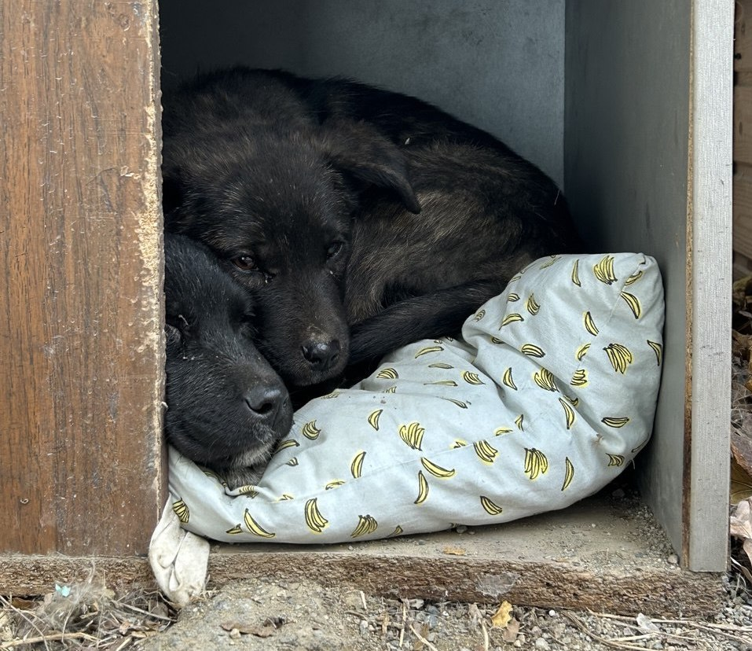

Моя история
Родился я не помню где, в конце 2024 года. У меня был немного старший брат, мамы я не помню совсем. Помню холод, твердый асфальт, тепло брата, как мы играли с ним, как спали вдвоем. Люди кормили нас хлебом и поили водой. У нас были большие животики и они болели. Какие то люди забирали у нас хлею и давали нам маленькие вкусные камушки. Они очень приятно хрустели во рту, Правда, мой брат мне не очень давал есть. Ел в оснвоном сам и у меня забирал. мне было стращно есть потому что он отбирал. Какие то люди даже поднимали меня и ставили на крышу будки что бы я мог поесть.
Мы понемногу росли. Брат становился больше меня, на улице становилось холоднее. Нас кормили каждый день, сделали теплую будку, каждую ночь добрая женщиа приносила нам бутыцлку горячей воды и мы спали рядом с ней.
Однажды мой братик куда то ушел, и я больше его не видел. Сразу после этого мне стало плохо-плохо. У меня болел живот сильно, лапы стали слабые. Болело в голове, я ничего не хотел и не мог делать. прото лежал и было плохо. Не знаю, сколько прошло так времени. Наверное много. Одной ночью стало очень громко и страшно. Небо сильно шумело, хлопало, кричало и рычало. И постоянно мигал свет, разных цветов. Мне казалось целой вечностью эта громкая громкая ночь
Через несколько дней после этой ночи меня забрала какая то женщина
к себе домой. Я плохо помню то время - я много спал, она возила
меня куда-то, где мне кололи лапу и я лежал и спал. Там странно
пахло и всем было страшно, кроме людей.
Я не помню, сколько прошло времени, но в один из дней за мной
приехал мой папа, забрал меня у этой женщины и повез домой. Когда
мне стало лучше, я узнал папу - это он кормил и грел меня на улице
, когда я жил с братом. Он забрал меня домой, теперь у меня есть
семья! мама, папа, и сестра Гого.